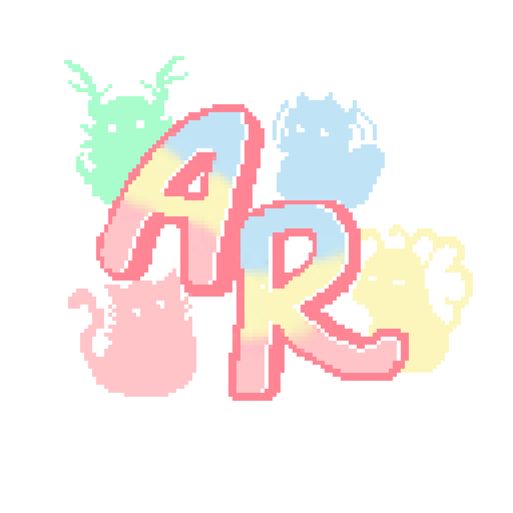
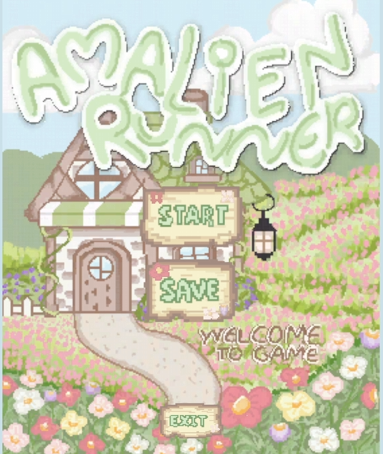
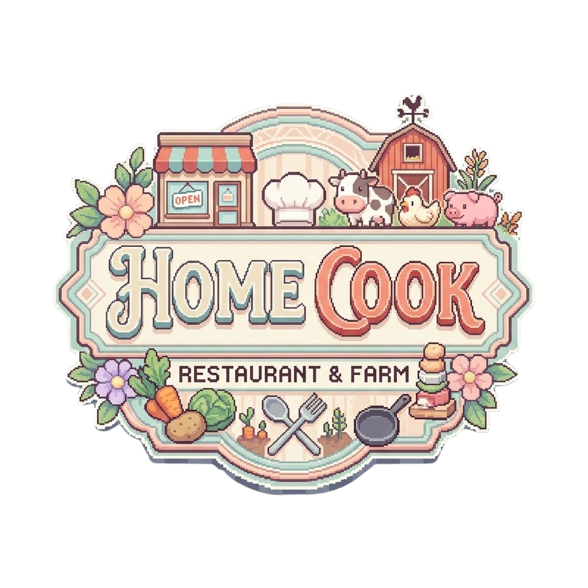
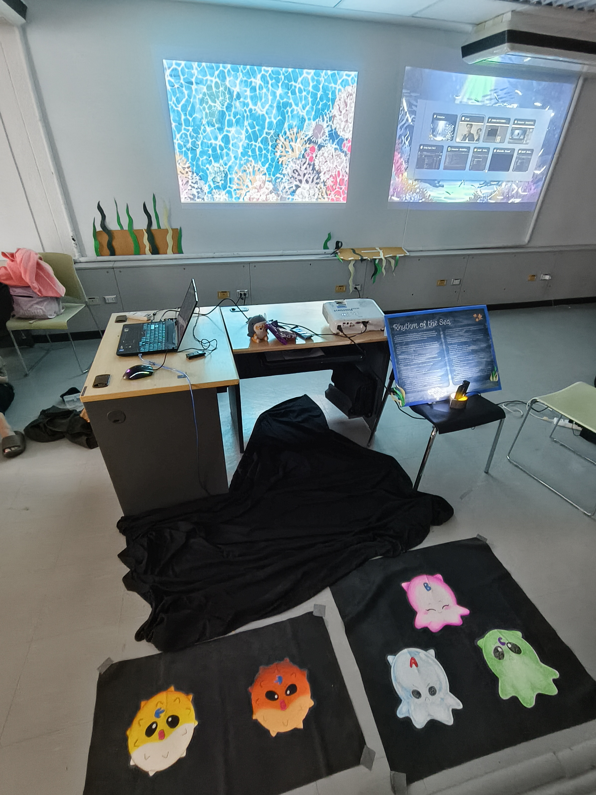
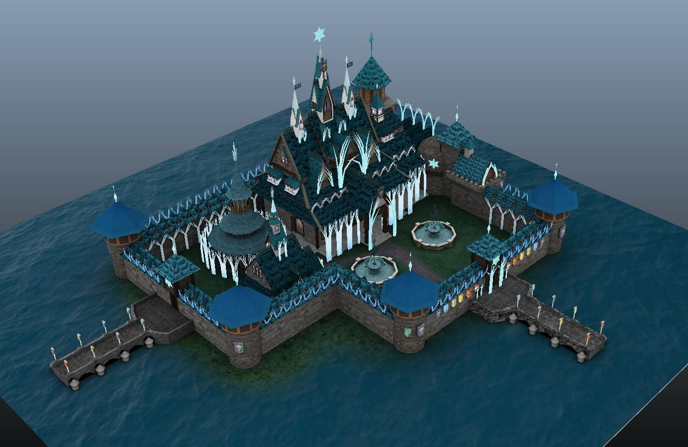
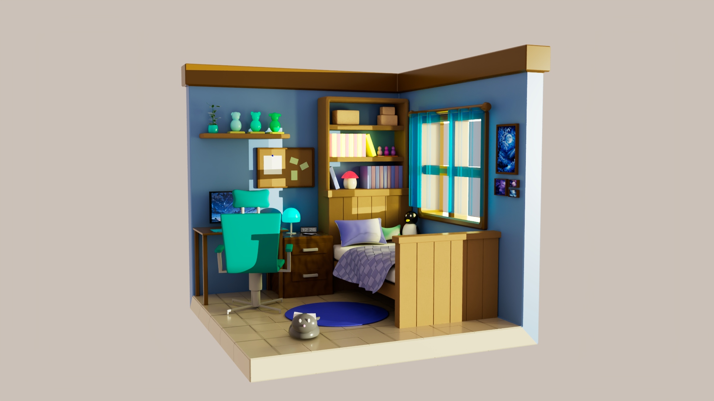
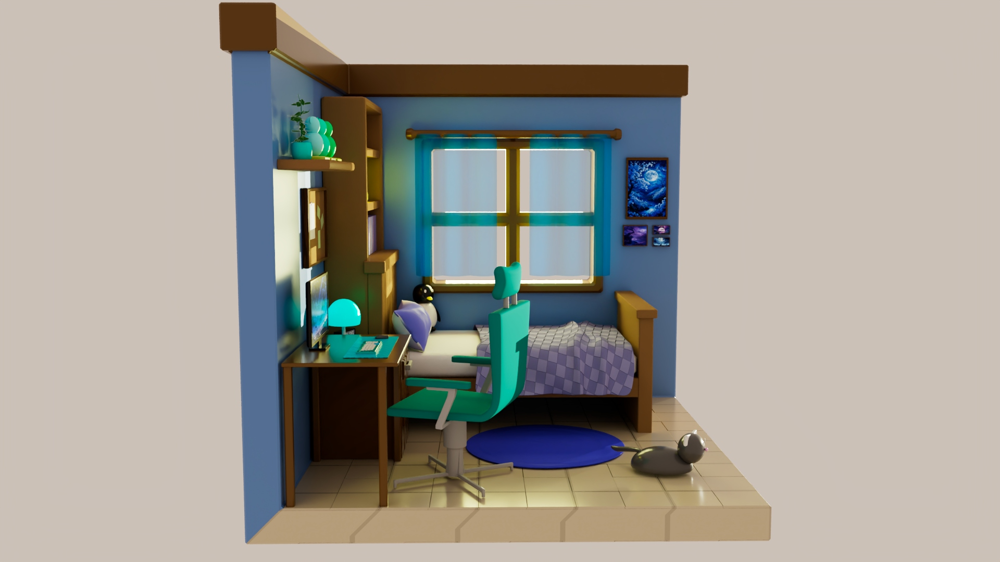

Game Amalien Runner


โปรเจกต์เกม 2D ที่ผสมผสานแนวคิดของเกมสัตว์เลี้ยงเสมือนจริง (ทามาก็อตจิ) เข้ากับเกมวิ่งแบบไร้จุดจบ (Endless Runner) ผู้เล่นจะต้องเลี้ยงสัตว์ให้เติบโตตามระดับ (ไข่, เด็ก, วัยรุ่น) ซึ่งจะปลดล็อกทักษะที่แตกต่างกัน นอกจากการเลี้ยงแล้ว ผู้เล่นสามารถนำสัตว์เลี้ยงไปวิ่งในมินิเกมเพื่อสะสมระยะทาง แลกเปลี่ยนเป็นค่าประสบการณ์ (EXP) และเหรียญสำหรับซื้ออาหารมาเร่งการเติบโตของสัตว์เลี้ยงได้
Project กลุ่ม: มีหน้าที่ดูแลรับผิดชอบในส่วนของ Game Design, Unity Developer, วางระบบโครงสร้างโค้ด, จัดการฉาก/ตัวละคร/Interface และทำหน้าที่เป็นหัวหน้ากลุ่ม
Game Home Cook

เกมแนวจำลองสถานการณ์ (Simulation) สไตล์ทำฟาร์มและร้านอาหาร โดยมีระบบการเล่นแบบวนลูป (Loop) ในแต่ละวันผู้เล่นต้องปลูกพืชและเก็บผลผลิต นำไปทำอาหารเสิร์ฟลูกค้า และนำกำไรมาอัปเกรดฟาร์ม ตัวเกมรองรับการเล่นบนมือถือโดยควบคุมผ่าน On-Screen Joystick มีการจัดการข้อมูลและเซฟเกมด้วย JSON, การใช้ 2D Array จัดการ Grid ปลูกพืช, วางระบบ State Machine ควบคุมสิ่งมีชีวิต และมีระบบ Offline Progression อิงเวลา Time-Delta เพื่อให้พืชผลเติบโตได้แม้ผู้เล่นจะปิดเกมไปแล้ว
Project เดี่ยว
Interactive Media RHYTHM OF THE SEA

งานในรายวิชา Interactive Media Design
โปรเจกต์เกมอินเทอร์แอคทีฟให้ความรู้เรื่องระบบนิเวศทางทะเลและห่วงโซ่อาหาร ออกแบบมาสำหรับเล่น Co-op 2 คน ควบคุมผ่าน Force Sensor 5 ตัว ผู้เล่นจะได้สัมผัสโลกใต้ทะเลผ่านฉากมุมมองด้านบนและด้านข้าง พร้อมแอนิเมชันสิ่งมีชีวิต เช่น วาฬเพชฌฆาต ปลาเฮอร์ริง แมวน้ำ และมีการแทรกความรู้ผ่านระบบ UI รวมถึง Quiz ช่วงท้ายเกม
Project กลุ่ม: มีหน้าที่ดูแลรับผิดชอบในส่วนของ Unity Developer พัฒนาระบบการกินปลาของตัวละครและระบบช่วงตอบคำถาม (Quiz)
3D Model
Model Castle

โมเดลปราสาทที่สร้างโดยอ้างอิง Reference จากภาพยนตร์แอนิเมชัน Frozen
Project กลุ่ม: มีหน้าที่กาง UV, จัดทำ Texture และทำหน้าที่หัวหน้ากลุ่ม
Model Room


โมเดลห้องสไตล์ Lowpoly ซึ่งเป็นงานแรกที่ได้เรียนรู้การจัดแสง (Lighting) เพื่อดึงความสวยงามของตัวโมเดลออกมา